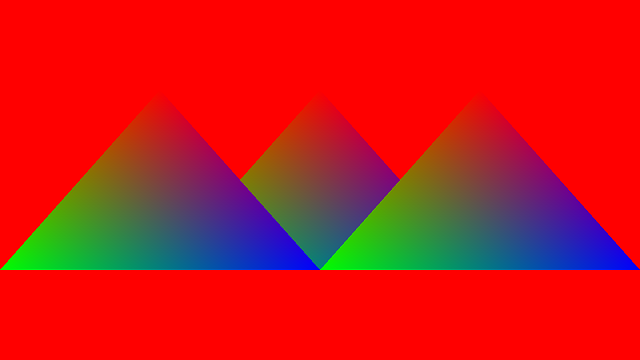

Ch7-5 初识Uniform缓冲区
本节的main.cpp对应示例代码中的：Ch7-5.hpp
这一节尝试使用uniform缓冲区来为三角形指定位移，并用实例化来绘制多个在不同位置的三角形。
使用Uniform缓冲区绘制多个三角形的流程
在之前Ch7-1.hpp用顶点缓冲区绘制三角形代码的基础上，使用顶点和uniform缓冲区绘制三角形需要经历以下步骤：
1.创建uniform缓冲区
2.创建描述符布局和管线布局
3.创建描述符
4.将uniform缓冲区的信息写入描述符
5.书写着色器
6.在命令缓冲区中绑定描述符并绘制
这一节会绘制出与前一节效果完全相同的图像，但比使用push constant会麻烦得多。
比较push constant和uniform缓冲区
Push constant的优势在于它会被直接记录在命令缓冲区中，且更新push constant这一行为不需要被显式同步，适合用于一些即时（immediate）设计的程序。从OpenGL移植过来的程序，若常量不是很大，适合把常量放进push constant。
劣势是push constant只支持128个字节，且在同一命令缓冲区中频繁更新可能显著增大命令缓冲区的体积。
Uniform缓冲区的优势在于其大小可以比较大（具体大小取决于硬件，若要更大，应当使用storage缓冲区）。
更新uniform缓冲区时，若数据量较大，那么需要使用vkCmdCopyBuffer(...)从暂存缓冲区拷贝数据，这一行为要么在单独的（与绘制无关）的命令缓冲区中进行，要么在渲染通道前进行并使用内存屏障进行同步。若数据量小于等于65536个字节，那么无需暂存缓冲区，可以用vkCmdUpdateBuffer(...)直接更新（仍旧需要同步）。
Uniform缓冲区需要通过描述符使用而不能直接绑定，相比之下比较费事。
创建Uniform缓冲区
glm::vec2 uniform_positions[] = { { .0f, .0f }, {}, { -.5f, .0f }, {}, { .5f, .0f }, {} }; uniformBuffer uniformBuffer(sizeof uniform_positions); uniformBuffer.TransferData(uniform_positions);
着色器中uniform缓冲区的内存布局只能为std140，由于C++中vec2的大小和对齐是8，凑整到16为16，于是需要在每个数组成员后再放一个vec2作为空数据以满足对其要求。
创建描述符布局和管线布局
请先参阅Ch3-6 描述符，并完成该节中所涉及到的所有Vulkan对象的封装。
在main.cpp中为描述符布局定义一个新的全局变量：
descriptorSetLayout descriptorSetLayout_triangle;
创建描述符布局。填写VkDescriptorSetLayoutBinding结构体：描述符被绑定到0号binding，类型为uniform缓冲区，个数是一个，在顶点着色器阶段使用它。
VkDescriptorSetLayoutBinding descriptorSetLayoutBinding_trianglePosition = { .binding = 0, //描述符被绑定到0号binding .descriptorType = VK_DESCRIPTOR_TYPE_UNIFORM_BUFFER,//类型为uniform缓冲区 .descriptorCount = 1, //个数是1个 .stageFlags = VK_SHADER_STAGE_VERTEX_BIT //在顶点着色器阶段读取uniform缓冲区 }; VkDescriptorSetLayoutCreateInfo descriptorSetLayoutCreateInfo_triangle = { .bindingCount = 1, .pBindings = &descriptorSetLayoutBinding_trianglePosition }; descriptorSetLayout_triangle.Create(descriptorSetLayoutCreateInfo_triangle);
然后创建管线布局。
这部分代码应该会被写在CreateLayout()函数中，整个函数如下：
void CreateLayout() { VkDescriptorSetLayoutBinding descriptorSetLayoutBinding_trianglePosition = { .binding = 0, //描述符被绑定到0号binding .descriptorType = VK_DESCRIPTOR_TYPE_UNIFORM_BUFFER,//类型为uniform缓冲区 .descriptorCount = 1, //个数是1个 .stageFlags = VK_SHADER_STAGE_VERTEX_BIT //在顶点着色器阶段读取uniform缓冲区 }; VkDescriptorSetLayoutCreateInfo descriptorSetLayoutCreateInfo_triangle = { .bindingCount = 1, .pBindings = &descriptorSetLayoutBinding_trianglePosition }; descriptorSetLayout_triangle.Create(descriptorSetLayoutCreateInfo_triangle); VkPipelineLayoutCreateInfo pipelineLayoutCreateInfo = { .setLayoutCount = 1, .pSetLayouts = descriptorSetLayout_triangle.Address() }; pipelineLayout_triangle.Create(pipelineLayoutCreateInfo); }
创建并写入描述符
在主函数中创建描述符。
首先创建描述符池。对于本节的程序，描述符池只需要能分配一个记录uniform缓冲区信息的描述符即可：
VkDescriptorPoolSize descriptorPoolSizes[] = { { VK_DESCRIPTOR_TYPE_UNIFORM_BUFFER, 1 } }; descriptorPool descriptorPool(1, descriptorPoolSizes);
然后分配描述符集：
descriptorSet descriptorSet_trianglePosition; descriptorPool.AllocateSets(descriptorSet_trianglePosition, descriptorSetLayout_triangle);
将uniform缓冲区的信息写入描述符：
VkDescriptorBufferInfo bufferInfo = { .buffer = uniformBuffer, .offset = 0, .range = sizeof uniform_positions//或VK_WHOLE_SIZE }; descriptorSet_trianglePosition.Write(bufferInfo, VK_DESCRIPTOR_TYPE_UNIFORM_BUFFER);
UniformBuffer.vert.shader
#version 460 #pragma shader_stage(vertex) layout(binding = 0) uniform trianglePosition { vec2 u_Positions[3]; }; layout(location = 0) in vec2 i_Position; layout(location = 1) in vec4 i_Color; layout(location = 0) out vec4 o_Color; void main() { gl_Position = vec4(i_Position + u_Positions[gl_InstanceIndex], 0, 1); o_Color = i_Color; }
-
涉及到的语法：Uniform缓冲区的声明方式。
与前一节中的顶点着色器大致相同，这里仅仅是将前一节中的push constant块改成了uniform缓冲区的块，而这是通过把layout(push_constant)修改为layout(binding = 0)来实现的。因为只有一组描述符且之后会将其绑定到0号描述符集索引，所以这里不必显式指定set = 0。
别忘了更改CreatePipeline(...)：
void CreatePipeline() { static shaderModule vert("shader/UniformBuffer.vert.spv"); //省略后续代码 }
绑定描述符并绘制
在录制命令缓冲区时，用vkCmdBindDescriptorSets绑定描述符：
void VKAPI_CALL vkCmdBindDescriptorSets(...) 的参数说明 |
|
|---|---|
VkCommandBuffer commandBuffer |
命令缓冲区的handle |
VkPipelineBindPoint pipelineBindPoint |
指定会使用描述符的管线的类型 |
VkPipelineLayout layout |
管线布局的handle |
uint32_t firstSet |
指定pDescriptorSets所指数组中第一个描述符集会被绑定到的索引 |
uint32_t descriptorSetCount |
要被绑定的描述符集的个数 |
const VkDescriptorSet* pDescriptorSets |
指向VkDescriptorSet的数组，指定所要绑定的描述符集 |
uint32_t dynamicOffsetCount |
动态offset的个数，与描述符中包含的动态uniform/storage缓冲区的总数一致 |
const uint32_t* pDynamicOffsets |
指向uint32_t的数组，为每个动态缓冲区提供相应的动态offset |
-
所能使用的描述符集的最大个数由硬件决定，通常会确保有4组可用。因此firstSet的有效范围通常为闭区间[0,3]。
-
pDynamicOffsets所指数组中的元素，与描述符集的中动态uniform/storage缓冲区一一对应。比如说，若只绑定一套描述符集，其中binding为0的是一个动态uniform缓冲区的描述符，binding为3的是包含两个动态storage缓冲区的描述符数组，那么需要为该描述符集提供3个动态offset（重点是只需要考虑动态缓冲区的个数并依序提供offset，不必考虑当中间隔的其他类型的描述符）。
在vkCmdDraw(...)前加入以下代码：
vkCmdBindDescriptorSets(commandBuffer, VK_PIPELINE_BIND_POINT_GRAPHICS, pipelineLayout_triangle, 0, 1, descriptorSet_trianglePosition.Address(), 0, nullptr);
绘制命令同上一节一样，绘制三个实例：
vkCmdDraw(commandBuffer, 3, 3, 0, 0);
运行程序，你应该会看到以下图像（还是跟上一节的一样）：
动态Uniform缓冲区
在写入描述符集中提到，若多个描述符引用同一个缓冲区的不同部分，则必须满足相应对齐要求。比如，假设有三组数据A~C，各自被用在不同的描述符中，则整个uniform缓冲区的大小如下计算：
//首先取得单位对齐距离 VkDeviceSize uniformAlignment = graphicsBase::Base().PhysicalDeviceProperties()limits.minUniformBufferOffsetAlignment; //计算每组数据的大小 VkDeviceSize dataSize[] = { sizeof A, sizeof B, sizeof C }; //每组数据的大小向上凑整到单位对齐距离的整数倍并相加，得到整个缓冲区的大小 VkDeviceSize uniformBufferSize = uniformAlignment * (std::ceil(float(dataSize[0]) / uniformAlignment) + ... + std::ceil(float(dataSize[2]) / uniformAlignment)); //上式更快的计算方法，原理请自行推导： //VkDeviceSize uniformBufferSize = ((uniformAlignment + sizeof A - 1) & ~(uniformAlignment - 1)) + ... + ((uniformAlignment + sizeof C - 1) & ~(uniformAlignment - 1));
绑定动态缓冲区时，动态offset需要满足同样的对齐要求，下文简单做个示例：
前文的程序是：uniform缓冲区的描述符对应包含3组位移数据的整个缓冲区，绑定描述符1次，然后执行1次绘制命令，一次性绘制3个三角形实例。
现试着将程序改写为：动态uniform缓冲区的描述符对应包含1组位移数据的部分缓冲区，绑定描述符3次，然后执行3次绘制命令，各绘制1个三角形实例。
那么首先在创建描述符布局时，指定描述符类型为动态uniform缓冲区：
VkDescriptorSetLayoutBinding descriptorSetLayoutBinding_trianglePosition = { .binding = 0, .descriptorType = VK_DESCRIPTOR_TYPE_UNIFORM_BUFFER_DYNAMIC,//类型为动态uniform缓冲区 .descriptorCount = 1, .stageFlags = VK_SHADER_STAGE_VERTEX_BIT };
Uniform缓冲区中的每组数据需要满足对齐要求，先创建相应大小的缓冲区，然后将数据拷贝到相应对齐位置：
glm::vec2 uniform_positions[] = { { .0f, .0f }, { -.5f, .0f }, { .5f, .0f } }; VkDeviceSize uniformAlignment = graphicsBase::Base().PhysicalDeviceProperties().limits.minUniformBufferOffsetAlignment; uniformAlignment *= (std::ceil(float(sizeof(glm::vec2)) / uniformAlignment); //上式可改为： //uniformAlignment = (uniformAlignment + sizeof(glm::vec2) - 1) & ~(uniformAlignment - 1); uniformBuffer uniformBuffer(uniformAlignment * 3); uniformBuffer.TransferData(uniform_positions, 3, sizeof(glm::vec2), sizeof(glm::vec2), uniformAlignment);
分配相应类型的描述符集，写入描述符：
VkDescriptorPoolSize descriptorPoolSizes[] = { { VK_DESCRIPTOR_TYPE_UNIFORM_BUFFER_DYNAMIC, 1 } }; descriptorPool descriptorPool(1, descriptorPoolSizes); descriptorSet descriptorSet_trianglePosition; descriptorPool.AllocateSets(descriptorSet_trianglePosition, descriptorSetLayout_triangle); VkDescriptorBufferInfo bufferInfo = { .buffer = uniformBuffer, .offset = 0, .range = sizeof(glm::vec2) //可通过描述符访问的范围为一个vec2的大小即可 }; descriptorSet_trianglePosition.Write(bufferInfo, VK_DESCRIPTOR_TYPE_UNIFORM_BUFFER_DYNAMIC);
在循环中绑定描述符并绘制：
for (size_t i = 0; i < 3; i++) { uint32_t dynamicOffset = uniformAlignment * i; vkCmdBindDescriptorSets(commandBuffer, VK_PIPELINE_BIND_POINT_GRAPHICS, pipelineLayout_triangle, 0, 1, descriptorSet_trianglePosition.Address(), 1, &dynamicOffset); vkCmdDraw(commandBuffer, 3, 1, 0, 0); }
运行结果当然与前文的相同。
上文仅演示用法，所示情形其实并不需要使用动态uniform缓冲区。动态uniform缓冲区/storage缓冲区的优势在于，可以在录制命令时灵活地改变读取缓冲区时的起始位置，而不必再重新写入描述符。
至此为止，你应该已经认识了四种绘制同一图形的不同方式了（实例化绘制、Push Constant、Uniform Buffer、动态Uniform Buffer），它们按可绘制的最大数量、内存开销、代码书写方便与否各有优劣。